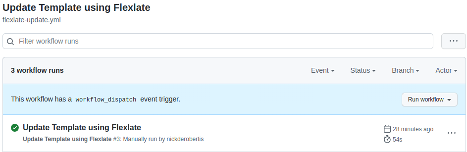
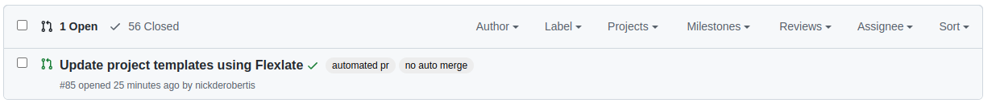
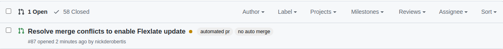
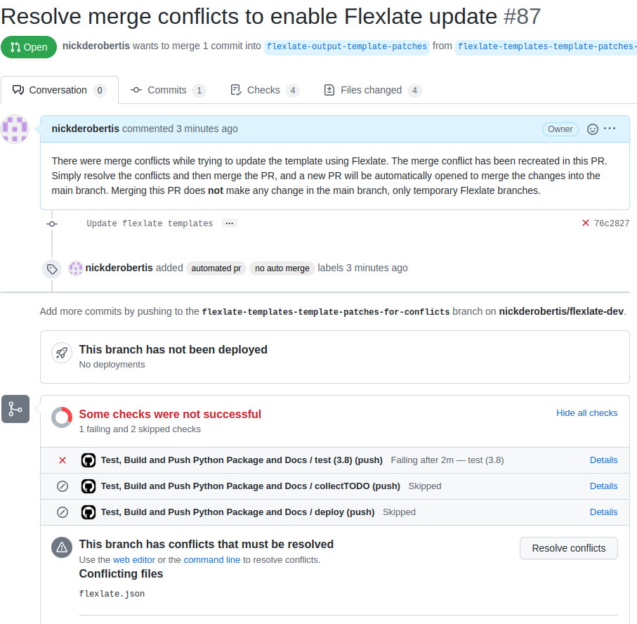
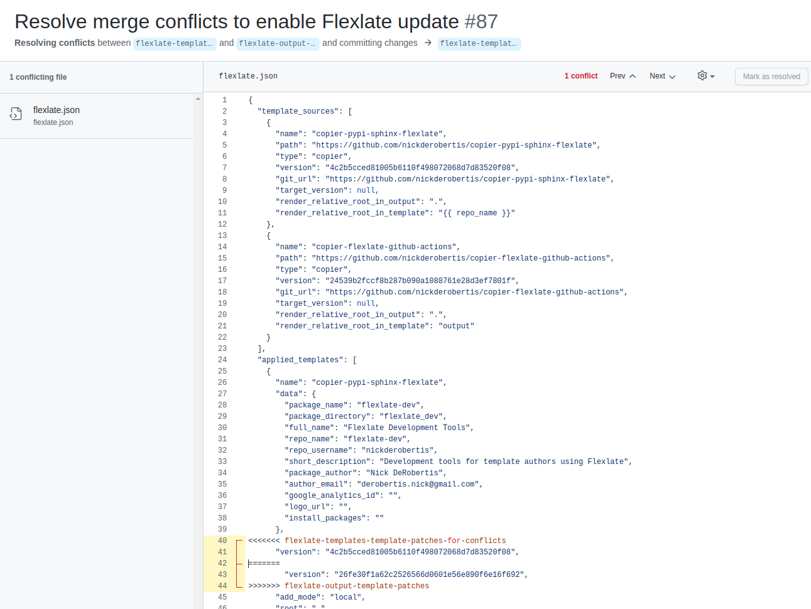
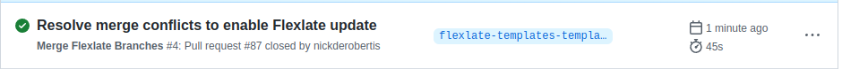
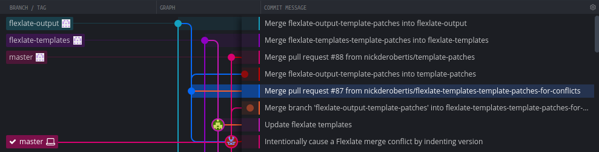

Automating Flexlate Workflows using CI¶
Flexlate comes with official Github Actions and workflows to automate template updates using CI. This tutorial will walk you through the process of setting up the workflows to update the templates and keep the Flexlate branches up to date.
By the end of this tutorial, template updates will be fully automated in your project, besides approving PRs and resolving merge conflicts.
Setting Up the Github Actions Workflows¶
Option 1: Use the Official Copier Template¶
There is an official Copier template that contains the necessary workflows to update the templates and keep the branches up to date. You can simply add it to your project and it should work as-is.
$ fxt add source https://github.com/nickderobertis/copier-flexlate-github-actions
Adding template source...
Adding template source copier-flexlate-github-actions from
https://github.com/nickderobertis/copier-flexlate-github-actions
⠋
⠙
Sucessfully added template source copier-flexlate-github-actions
⠹
⠹
$ fxt add output copier-flexlate-github-actions
Applying template copier-flexlate-github-actions to /tmp/tmppdc6llp6
Updating 1 applied templates
Name of the main branch
main_branch_name? Format: str
main
create .github/
create .github/workflows/
create .github/workflows/flexlate-update.yml
create .github/workflows/flexlate-after-merge.yml
create temp.txt
✔ Successfully updated template output
✔ Successfully applied template copier-flexlate-github-actions to
/tmp/tmppdc6llp6
$ ls -l .github/workflows
total 8
-rw-r--r-- 1 runner docker 855 May 29 16:23 flexlate-after-merge.yml
-rw-r--r-- 1 runner docker 728 May 29 16:23 flexlate-update.yml
Option 2: Manually add the Workflows¶
You can also just manually create the necessary workflow files in your
project. The workflow files should be created in the .github/workflows directory.
Set up the Flexlate Update Workflow¶
Set up the Flexlate Update action to run on a schedule, or with a manual trigger:
name: Update Template using Flexlate
on:
schedule:
- cron: "0 3 * * *" # every day at 3:00 AM
workflow_dispatch:
jobs:
templateUpdate:
runs-on: ubuntu-latest
strategy:
max-parallel: 1
matrix:
python-version: [3.8]
steps:
- uses: actions/checkout@v3
with:
ref: ${{ github.ref_name }}
fetch-depth: 0
token: ${{ secrets.gh_token }}
- name: Set up Python ${{ matrix.python-version }}
uses: actions/setup-python@v3
with:
python-version: ${{ matrix.python-version }}
- uses: nickderobertis/flexlate-update-action@v1
with:
gh_token: ${{ secrets.gh_token }}
main_branch_name: main
Both actions/checkout and actions/setup-python must be run
before the Flexlate Update Action. actions/checkout must be
run with fetch-depth: 0 so that all branches and history
are fetched.
Set up the Flexlate After-Merge Workflow¶
Set up the Flexlate After-Merge action to run after the main branch or a flexlate-output branch is merged:
name: Flexlate After-Merge
on:
pull_request:
branches:
- main
- flexlate-output-**
types: [closed]
workflow_dispatch:
inputs:
branch:
description: "The name of the base branch that the Flexlate branches were created on"
required: false
type: string
default: template-patches
jobs:
merge_flexlate_branches:
runs-on: ubuntu-latest
strategy:
max-parallel: 1
matrix:
python-version: [3.8]
if: (github.event.pull_request.merged == true || github.event.inputs.branch )
steps:
- uses: actions/checkout@v3
with:
ref: master
fetch-depth: 0
- uses: nickderobertis/flexlate-merge-action@v1
with:
branch_name: ${{ inputs.branch }}
gh_token: ${{ secrets.GH_TOKEN }}
main_branch: main
actions/checkout must be run
before the Flexlate Update Action with fetch-depth: 0
so that all branches and history are fetched. The remaining
logic allows running the workflow manually targeting a specific
set of Flexlate feature branches.
The Workflows, Explained¶
Flexlate Update Workflow¶
This workflow uses the Flexlate Update Action to create PRs with template updates. The workflow will run on a schedule or by manual trigger:
If there are no template updates, it will exit successfully.
Update without Conflicts¶
If there are updates, then it will open a PR:
You will see the new changes from the template as well as the version
in flexlate.json being updated.
After you merge this PR, the Flexlate After-Merge workflow will be triggered.
Update with Merge Conflicts¶
If there are merge conflicts, it will instead open a merge conflict resolution PR instead.
You can resolve these conflicts right in Github’s web editor:
Clicking that button will take you into the web editor:
After you’ve resolved the conflicts, you should merge immediately. The merge to the main branch will be in another step triggered by the Flexlate After-Merge workflow.
Flexlate After-Merge Workflow¶
The after-merge workflow serves two functions: to merge Flexlate feature branches into Flexlate main branches, and to open a PR with template updates after resolving merge conflicts in the web editor.
Merging Flexlate Feature Branches¶
After you’ve merged a feature branch that has corresponding Flexlate feature branches into the main branch, the after-merge workflow will automatically merge those Flexlate feature branches into the Flexlate main branches.
 Opening a PR with Template Updates After Conflict Resolution¶
After you’ve resolved merge conflicts in the web editor, the after-merge
workflow will run. It will see that a flexlate-templates-*-for-conflicts
branch was updated and automatically merge that branch into the original
flexlate-templates- feature branch, then merge that branch into the
feature branch. Then a PR will be opened with that feature branch.
At the end of this process, it is just like a PR was opened in the
first place without conflicts.